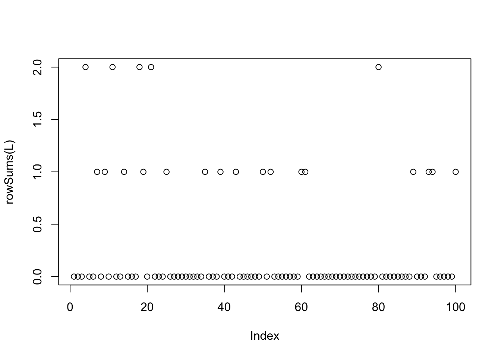

flash_cov_overlapping_groups
Matthew Stephens
2024-07-31
Last updated: 2024-09-14
Checks: 7 0
Knit directory: misc/analysis/
This reproducible R Markdown analysis was created with workflowr (version 1.7.1). The Checks tab describes the reproducibility checks that were applied when the results were created. The Past versions tab lists the development history.
Great! Since the R Markdown file has been committed to the Git repository, you know the exact version of the code that produced these results.
Great job! The global environment was empty. Objects defined in the global environment can affect the analysis in your R Markdown file in unknown ways. For reproduciblity it’s best to always run the code in an empty environment.
The command set.seed(1) was run prior to running the
code in the R Markdown file. Setting a seed ensures that any results
that rely on randomness, e.g. subsampling or permutations, are
reproducible.
Great job! Recording the operating system, R version, and package versions is critical for reproducibility.
Nice! There were no cached chunks for this analysis, so you can be confident that you successfully produced the results during this run.
Great job! Using relative paths to the files within your workflowr project makes it easier to run your code on other machines.
Great! You are using Git for version control. Tracking code development and connecting the code version to the results is critical for reproducibility.
The results in this page were generated with repository version 2e5d38a. See the Past versions tab to see a history of the changes made to the R Markdown and HTML files.
Note that you need to be careful to ensure that all relevant files for
the analysis have been committed to Git prior to generating the results
(you can use wflow_publish or
wflow_git_commit). workflowr only checks the R Markdown
file, but you know if there are other scripts or data files that it
depends on. Below is the status of the Git repository when the results
were generated:
Ignored files:
Ignored: .DS_Store
Ignored: .Rhistory
Ignored: .Rproj.user/
Ignored: analysis/.RData
Ignored: analysis/.Rhistory
Ignored: analysis/ALStruct_cache/
Ignored: data/.Rhistory
Ignored: data/methylation-data-for-matthew.rds
Ignored: data/pbmc/
Ignored: data/pbmc_purified.RData
Untracked files:
Untracked: .dropbox
Untracked: Icon
Untracked: analysis/GHstan.Rmd
Untracked: analysis/GTEX-cogaps.Rmd
Untracked: analysis/PACS.Rmd
Untracked: analysis/Rplot.png
Untracked: analysis/SPCAvRP.rmd
Untracked: analysis/abf_comparisons.Rmd
Untracked: analysis/admm_02.Rmd
Untracked: analysis/admm_03.Rmd
Untracked: analysis/cache/
Untracked: analysis/cholesky.Rmd
Untracked: analysis/compare-transformed-models.Rmd
Untracked: analysis/cormotif.Rmd
Untracked: analysis/cp_ash.Rmd
Untracked: analysis/eQTL.perm.rand.pdf
Untracked: analysis/eb_prepilot.Rmd
Untracked: analysis/eb_var.Rmd
Untracked: analysis/ebpmf1.Rmd
Untracked: analysis/ebpmf_sla_text.Rmd
Untracked: analysis/ebspca_sims.Rmd
Untracked: analysis/explore_psvd.Rmd
Untracked: analysis/fa_check_identify.Rmd
Untracked: analysis/fa_iterative.Rmd
Untracked: analysis/flash_test_tree.Rmd
Untracked: analysis/flash_tree.Rmd
Untracked: analysis/flashier_newgroups.Rmd
Untracked: analysis/flashier_nmf_triples.Rmd
Untracked: analysis/flashier_pbmc.Rmd
Untracked: analysis/flashier_snn_shifted_prior.Rmd
Untracked: analysis/greedy_ebpmf_exploration_00.Rmd
Untracked: analysis/ieQTL.perm.rand.pdf
Untracked: analysis/lasso_em_03.Rmd
Untracked: analysis/m6amash.Rmd
Untracked: analysis/mash_bhat_z.Rmd
Untracked: analysis/mash_ieqtl_permutations.Rmd
Untracked: analysis/methylation_example.Rmd
Untracked: analysis/mixsqp.Rmd
Untracked: analysis/mr.ash_lasso_init.Rmd
Untracked: analysis/mr.mash.test.Rmd
Untracked: analysis/mr_ash_modular.Rmd
Untracked: analysis/mr_ash_parameterization.Rmd
Untracked: analysis/mr_ash_ridge.Rmd
Untracked: analysis/mv_gaussian_message_passing.Rmd
Untracked: analysis/nejm.Rmd
Untracked: analysis/nmf_bg.Rmd
Untracked: analysis/normal_conditional_on_r2.Rmd
Untracked: analysis/normalize.Rmd
Untracked: analysis/pbmc.Rmd
Untracked: analysis/pca_binary_weighted.Rmd
Untracked: analysis/pca_l1.Rmd
Untracked: analysis/poisson_nmf_approx.Rmd
Untracked: analysis/poisson_shrink.Rmd
Untracked: analysis/poisson_transform.Rmd
Untracked: analysis/qrnotes.txt
Untracked: analysis/ridge_iterative_02.Rmd
Untracked: analysis/ridge_iterative_splitting.Rmd
Untracked: analysis/samps/
Untracked: analysis/sc_bimodal.Rmd
Untracked: analysis/shrinkage_comparisons_changepoints.Rmd
Untracked: analysis/susie_cov.Rmd
Untracked: analysis/susie_en.Rmd
Untracked: analysis/susie_z_investigate.Rmd
Untracked: analysis/svd-timing.Rmd
Untracked: analysis/temp.RDS
Untracked: analysis/temp.Rmd
Untracked: analysis/test-figure/
Untracked: analysis/test.Rmd
Untracked: analysis/test.Rpres
Untracked: analysis/test.md
Untracked: analysis/test_qr.R
Untracked: analysis/test_sparse.Rmd
Untracked: analysis/tree_dist_top_eigenvector.Rmd
Untracked: analysis/z.txt
Untracked: code/multivariate_testfuncs.R
Untracked: code/rqb.hacked.R
Untracked: data/4matthew/
Untracked: data/4matthew2/
Untracked: data/E-MTAB-2805.processed.1/
Untracked: data/ENSG00000156738.Sim_Y2.RDS
Untracked: data/GDS5363_full.soft.gz
Untracked: data/GSE41265_allGenesTPM.txt
Untracked: data/Muscle_Skeletal.ACTN3.pm1Mb.RDS
Untracked: data/P.rds
Untracked: data/Thyroid.FMO2.pm1Mb.RDS
Untracked: data/bmass.HaemgenRBC2016.MAF01.Vs2.MergedDataSources.200kRanSubset.ChrBPMAFMarkerZScores.vs1.txt.gz
Untracked: data/bmass.HaemgenRBC2016.Vs2.NewSNPs.ZScores.hclust.vs1.txt
Untracked: data/bmass.HaemgenRBC2016.Vs2.PreviousSNPs.ZScores.hclust.vs1.txt
Untracked: data/eb_prepilot/
Untracked: data/finemap_data/fmo2.sim/b.txt
Untracked: data/finemap_data/fmo2.sim/dap_out.txt
Untracked: data/finemap_data/fmo2.sim/dap_out2.txt
Untracked: data/finemap_data/fmo2.sim/dap_out2_snp.txt
Untracked: data/finemap_data/fmo2.sim/dap_out_snp.txt
Untracked: data/finemap_data/fmo2.sim/data
Untracked: data/finemap_data/fmo2.sim/fmo2.sim.config
Untracked: data/finemap_data/fmo2.sim/fmo2.sim.k
Untracked: data/finemap_data/fmo2.sim/fmo2.sim.k4.config
Untracked: data/finemap_data/fmo2.sim/fmo2.sim.k4.snp
Untracked: data/finemap_data/fmo2.sim/fmo2.sim.ld
Untracked: data/finemap_data/fmo2.sim/fmo2.sim.snp
Untracked: data/finemap_data/fmo2.sim/fmo2.sim.z
Untracked: data/finemap_data/fmo2.sim/pos.txt
Untracked: data/logm.csv
Untracked: data/m.cd.RDS
Untracked: data/m.cdu.old.RDS
Untracked: data/m.new.cd.RDS
Untracked: data/m.old.cd.RDS
Untracked: data/mainbib.bib.old
Untracked: data/mat.csv
Untracked: data/mat.txt
Untracked: data/mat_new.csv
Untracked: data/matrix_lik.rds
Untracked: data/paintor_data/
Untracked: data/running_data_chris.csv
Untracked: data/running_data_matthew.csv
Untracked: data/temp.txt
Untracked: data/y.txt
Untracked: data/y_f.txt
Untracked: data/zscore_jointLCLs_m6AQTLs_susie_eQTLpruned.rds
Untracked: data/zscore_jointLCLs_random.rds
Untracked: explore_udi.R
Untracked: output/fit.k10.rds
Untracked: output/fit.nn.pbmc.purified.rds
Untracked: output/fit.nn.rds
Untracked: output/fit.nn.s.001.rds
Untracked: output/fit.nn.s.01.rds
Untracked: output/fit.nn.s.1.rds
Untracked: output/fit.nn.s.10.rds
Untracked: output/fit.snn.s.001.rds
Untracked: output/fit.snn.s.01.nninit.rds
Untracked: output/fit.snn.s.01.rds
Untracked: output/fit.varbvs.RDS
Untracked: output/fit2.nn.pbmc.purified.rds
Untracked: output/glmnet.fit.RDS
Untracked: output/snn07.txt
Untracked: output/snn34.txt
Untracked: output/test.bv.txt
Untracked: output/test.gamma.txt
Untracked: output/test.hyp.txt
Untracked: output/test.log.txt
Untracked: output/test.param.txt
Untracked: output/test2.bv.txt
Untracked: output/test2.gamma.txt
Untracked: output/test2.hyp.txt
Untracked: output/test2.log.txt
Untracked: output/test2.param.txt
Untracked: output/test3.bv.txt
Untracked: output/test3.gamma.txt
Untracked: output/test3.hyp.txt
Untracked: output/test3.log.txt
Untracked: output/test3.param.txt
Untracked: output/test4.bv.txt
Untracked: output/test4.gamma.txt
Untracked: output/test4.hyp.txt
Untracked: output/test4.log.txt
Untracked: output/test4.param.txt
Untracked: output/test5.bv.txt
Untracked: output/test5.gamma.txt
Untracked: output/test5.hyp.txt
Untracked: output/test5.log.txt
Untracked: output/test5.param.txt
Unstaged changes:
Modified: .gitignore
Modified: analysis/flashier_log1p.Rmd
Modified: analysis/flashier_sla_text.Rmd
Modified: analysis/logistic_z_scores.Rmd
Modified: analysis/mr_ash_pen.Rmd
Modified: analysis/susie_flash.Rmd
Note that any generated files, e.g. HTML, png, CSS, etc., are not included in this status report because it is ok for generated content to have uncommitted changes.
These are the previous versions of the repository in which changes were
made to the R Markdown
(analysis/flash_cov_overlapping_groups.Rmd) and HTML
(docs/flash_cov_overlapping_groups.html) files. If you’ve
configured a remote Git repository (see ?wflow_git_remote),
click on the hyperlinks in the table below to view the files as they
were in that past version.
| File | Version | Author | Date | Message |
|---|---|---|---|---|
| Rmd | 2e5d38a | Matthew Stephens | 2024-09-14 | workflowr::wflow_publish("analysis/flash_cov_overlapping_groups.Rmd") |
Introduction
I wanted to examine how applying flash to gram matrix works in some simple simulations involving overlapping groups (L is binary, F is normal). I simulate binary factors, and use point-exponential priors. The results are somewhat promising (after back-fitting). Even when it doesn’t separate the groups, each factor captures a small number of groups. It suggests one could maybe do some post-processing/follow up to try to split these compound factors into multiple factors, one for each group.
Three overlapping groups
I simulate some data with 3 overlapping groups, each containing a random 1/10 of the observations (so the groups do not overlap too much). I start with very little noise.
set.seed(1)
library(flashier)Loading required package: ebnmn = 100
p = 1000
k = 3
L= matrix(rbinom(k*n,1,0.1),nrow=n)
F = matrix(rnorm(k*p),nrow=p)
X = L %*% t(F) + rnorm(n*p,0,0.001)
plot(rowSums(L))
I fit with both greedy and backfitting:
fit = flash(X %*% t(X), ebnm_fn = ebnm_point_exponential)Adding factor 1 to flash object...
Adding factor 2 to flash object...
Adding factor 3 to flash object...
Adding factor 4 to flash object...
Adding factor 5 to flash object...Warning in scale.EF(EF): Fitting stopped after the initialization function
failed to find a non-zero factor.Factor doesn't significantly increase objective and won't be added.
Wrapping up...
Done.
Nullchecking 4 factors...
Done.fit.bf = flash(X %*% t(X), ebnm_fn = ebnm_point_exponential, backfit =TRUE)Adding factor 1 to flash object...
Adding factor 2 to flash object...
Adding factor 3 to flash object...
Adding factor 4 to flash object...
Adding factor 5 to flash object...Warning in scale.EF(EF): Fitting stopped after the initialization function
failed to find a non-zero factor.Factor doesn't significantly increase objective and won't be added.
Wrapping up...
Done.
Backfitting 4 factors (tolerance: 1.49e-04)...
Difference between iterations is within 1.0e+03...
Difference between iterations is within 1.0e+02...
Difference between iterations is within 1.0e+01...
Difference between iterations is within 1.0e+00...
Difference between iterations is within 1.0e-01...
Difference between iterations is within 1.0e-02...
Difference between iterations is within 1.0e-03...
Difference between iterations is within 1.0e-04...
Wrapping up...
Done.
Nullchecking 4 factors...
Done.The greedy fit starts by initially picking out multiple groups (it is strongly correlated with how many groups each sample is in):
plot(rowSums(L),fit$L_pm[,1])But the backfitting helps fix this: now the estimated L is almost binary and picks out the groups correctly (groups 2 and 3 are switched):
plot(rowSums(L), fit.bf$L_pm[,1])plot(L[,1],fit.bf$L_pm[,1])plot(L[,2],fit.bf$L_pm[,3])plot(L[,3],fit.bf$L_pm[,2])Try point laplace to see what happens. In this case it basically explains everything with 2 factors (3rd factor has small contribution) and the first factor is capturing the number of groups - backfitting does not work as with point exponential here.
fit.pl.bf = flash(X %*% t(X), ebnm_fn = ebnm_point_laplace, backfit =TRUE)Adding factor 1 to flash object...
Adding factor 2 to flash object...
Adding factor 3 to flash object...
Adding factor 4 to flash object...
Factor doesn't significantly increase objective and won't be added.
Wrapping up...
Done.
Backfitting 3 factors (tolerance: 1.49e-04)...
Difference between iterations is within 1.0e+04...
Difference between iterations is within 1.0e+03...
Difference between iterations is within 1.0e+02...
Difference between iterations is within 1.0e+01...
Difference between iterations is within 1.0e+00...
Difference between iterations is within 1.0e-01...
Wrapping up...
Done.
Nullchecking 3 factors...
Done.fit.pl.bfFlash object with 3 factors.
Proportion of variance explained:
Factor 1: 0.618
Factor 2: 0.322
Factor 3: 0.061
Variational lower bound: 68070.739plot(rowSums(L),fit.pl.bf$L_pm[,1])10 overlapping groups
Now I try something more challenging with 10 groups:
set.seed(1)
k=10
L= matrix(rbinom(k*n,1,0.1),nrow=n)
F = matrix(rnorm(k*p),nrow=p)
X = L %*% t(F) + rnorm(n*p,0,0.001)
plot(rowSums(L))Fit greedy and backfitting:
fit = flash(X %*% t(X), ebnm_fn = ebnm_point_exponential)Adding factor 1 to flash object...
Adding factor 2 to flash object...
Adding factor 3 to flash object...
Adding factor 4 to flash object...
Adding factor 5 to flash object...
Adding factor 6 to flash object...
Adding factor 7 to flash object...Warning in scale.EF(EF): Fitting stopped after the initialization function
failed to find a non-zero factor.Factor doesn't significantly increase objective and won't be added.
Wrapping up...
Done.
Nullchecking 6 factors...
Done.fit.bf = flash(X %*% t(X), ebnm_fn = ebnm_point_exponential, backfit =TRUE)Adding factor 1 to flash object...
Adding factor 2 to flash object...
Adding factor 3 to flash object...
Adding factor 4 to flash object...
Adding factor 5 to flash object...
Adding factor 6 to flash object...
Adding factor 7 to flash object...Warning in scale.EF(EF): Fitting stopped after the initialization function
failed to find a non-zero factor.Factor doesn't significantly increase objective and won't be added.
Wrapping up...
Done.
Backfitting 6 factors (tolerance: 1.49e-04)...
Difference between iterations is within 1.0e+03...
Difference between iterations is within 1.0e+02...
Difference between iterations is within 1.0e+01...
Difference between iterations is within 1.0e+00...
Difference between iterations is within 1.0e-01...
Difference between iterations is within 1.0e-02...
Difference between iterations is within 1.0e-03...
Difference between iterations is within 1.0e-04...
Wrapping up...
Done.
Nullchecking 6 factors...
Done.Even with backfitting, some of the groups are put into the same factors (it uses 6 factors for 10 groups); maybe not suprising because the prior allows non-binary factors which can capture binary things…
par(mfcol=c(2,3))
for(i in 1:6){
plot(fit.bf$L_pm[,i])
}Examining the correlations of each factor with each group, we see the 6 inferred factors collectively pick out 10 groups, and each one picks out 1-3 groups, as follows:
factor | group
1 | 3,7,8
2 | 5
3 | 6,10
4 | 1,2
5 | 9
6 | 4
cor(L, fit.bf$L_pm) [,1] [,2] [,3] [,4] [,5] [,6]
[1,] -0.01234862 -0.10229226 -0.119340333 0.683062668 0.16349088 -0.09285511
[2,] 0.09718390 -0.02964221 0.018222242 0.927376113 0.06491014 -0.11644674
[3,] 0.69588688 -0.05316003 -0.166549542 0.006099336 0.06178274 0.05494743
[4,] 0.12936739 0.11157517 -0.017243775 -0.127499408 -0.06270951 0.99734135
[5,] -0.08711811 0.99931604 -0.191168934 -0.066146864 0.07510302 0.09816562
[6,] -0.08431898 -0.14231333 0.855115116 -0.032825978 0.04329927 0.08336826
[7,] 0.67526316 0.03908840 0.005572265 0.035581066 -0.06287441 0.17992081
[8,] 0.53760926 -0.13504136 -0.026355268 0.127681105 -0.04054848 -0.03136272
[9,] -0.03498443 0.08750939 0.045363376 0.109409666 0.99816824 -0.05168151
[10,] -0.09945685 -0.14236086 0.583478768 -0.032108437 0.04040719 -0.13044452Hierarchical groups
One thing I wondered: we found that it was helpful for trees to seek a divergence factorization before the drift factorization, but now I’m not entirely clear why this is. (I have some vague justifications, including the fact that the resulting L vectors are closer to orthogonal, but overall I’m not really sure why point-exponential does not work so well). So here I try the point exponential with hierarchical groups.
I generate some splits
k = 6
set.seed(1)
l1 = rep(c(1,0),c(n/2,n/2))
l2 = rep(c(0,1),c(n/2,n/2))
l3 = rep(c(1,0,0,0),c(n/4,n/4,n/4,n/4))
l4 = rep(c(0,1,0,0),c(n/4,n/4,n/4,n/4))
l5 = rep(c(0,0,1,0),c(n/4,n/4,n/4,n/4))
l6 = rep(c(0,0,0,1),c(n/4,n/4,n/4,n/4))
L = cbind(l1,l2,l3,l4,l5,l6)
F = matrix(rnorm(k*p),nrow=p)
X = L %*% t(F) + rnorm(n*p,0,0.001)
fit = flash(X %*% t(X),ebnm_fn = ebnm_point_exponential, backfit=TRUE )Adding factor 1 to flash object...
Adding factor 2 to flash object...
Adding factor 3 to flash object...Warning in scale.EF(EF): Fitting stopped after the initialization function
failed to find a non-zero factor.Factor doesn't significantly increase objective and won't be added.
Wrapping up...
Done.
Backfitting 2 factors (tolerance: 1.49e-04)...
Difference between iterations is within 1.0e+02...
Difference between iterations is within 1.0e+01...
Difference between iterations is within 1.0e+00...
Wrapping up...
Done.
Nullchecking 2 factors...
Done.We see that the fit stops after 2 factors. Here I plot the image of the residuals. Green is negative numbers and red is positive.
normalize = function(x){x/max(abs(x))}
image( normalize(residuals(fit)), levels=seq(-1,1,length=21),
col= rgb(red = c(seq(0,1,length=10),1,rep(1,length=10)),
green = c(rep(1,length=10),1,seq(1,0,length=10)),
blue = c(seq(0,1,length=10),1,seq(1,0,length=10))) )Warning in plot.window(...): "levels" is not a graphical parameterWarning in plot.xy(xy, type, ...): "levels" is not a graphical parameterWarning in axis(side = side, at = at, labels = labels, ...): "levels" is not a
graphical parameter
Warning in axis(side = side, at = at, labels = labels, ...): "levels" is not a
graphical parameterWarning in box(...): "levels" is not a graphical parameterWarning in title(...): "levels" is not a graphical parameterWe see the problem: essentially flash removes “too much” of the top branch, and can’t recover because of the non-negative constraint (and, possibly, an over-estimated residual variance?). Indeed, it seems the power method which is used to initialize does not find a non-negative initial vector. This seems like a useful case study to try to fix.
I tried fixing the residual variance to see if it helped, but no luck:
fit = flash(X %*% t(X),ebnm_fn = ebnm_point_exponential, backfit=TRUE, var_type = NULL, S = 0.001 )Adding factor 1 to flash object...
Adding factor 2 to flash object...
Adding factor 3 to flash object...Warning in scale.EF(EF): Fitting stopped after the initialization function
failed to find a non-zero factor.Factor doesn't significantly increase objective and won't be added.
Wrapping up...
Done.
Backfitting 2 factors (tolerance: 1.49e-04)...
Difference between iterations is within 1.0e+00...
Wrapping up...
Done.
Nullchecking 2 factors...
Done.Try point Laplace: it also doesn’t work here (doesn’t find sparse solutions) perhaps because the small residual variance makes the fitting sticky, and the initializations are not sparse enough?
fit = flash(X %*% t(X),ebnm_fn = ebnm_point_laplace, backfit=TRUE)Adding factor 1 to flash object...
Adding factor 2 to flash object...
Adding factor 3 to flash object...
Adding factor 4 to flash object...
Adding factor 5 to flash object...
Factor doesn't significantly increase objective and won't be added.
Wrapping up...
Done.
Backfitting 4 factors (tolerance: 1.49e-04)...
Difference between iterations is within 1.0e+04...
Difference between iterations is within 1.0e+03...
Difference between iterations is within 1.0e+02...
Wrapping up...
Done.
Nullchecking 4 factors...
Done.plot(fit$L_pm[,1])
plot(fit$L_pm[,2])plot(fit$L_pm[,3])plot(fit$L_pm[,4])I feel we might want to invest more in some simple ways to find sparse initial solutions to initialize flashier with - eg using an L1 penalty and computing the full solution path? (We could implement L1 penalty both for the data matrix X and the covariance matrix XtX?) We also need to understand the implications of over-removing the top branch and maybe somehow to fix that. Maybe ideas related to nonnegative matrix under-approximation, or to neighbor-joining (which has to work out how to collapse two nodes into a single node) can help? Something to think about: in a tree, does it help to find the sparsest factors first, rather than the top branch, more similar to neighbor joining?
sessionInfo()R version 4.2.1 (2022-06-23)
Platform: x86_64-apple-darwin17.0 (64-bit)
Running under: macOS Big Sur ... 10.16
Matrix products: default
BLAS: /Library/Frameworks/R.framework/Versions/4.2/Resources/lib/libRblas.0.dylib
LAPACK: /Library/Frameworks/R.framework/Versions/4.2/Resources/lib/libRlapack.dylib
locale:
[1] en_US.UTF-8/en_US.UTF-8/en_US.UTF-8/C/en_US.UTF-8/en_US.UTF-8
attached base packages:
[1] stats graphics grDevices utils datasets methods base
other attached packages:
[1] flashier_1.0.53 ebnm_1.1-2
loaded via a namespace (and not attached):
[1] httr_1.4.7 tidyr_1.3.0 sass_0.4.8
[4] viridisLite_0.4.2 jsonlite_1.8.8 splines_4.2.1
[7] RhpcBLASctl_0.23-42 gtools_3.9.5 bslib_0.6.1
[10] RcppParallel_5.1.7 horseshoe_0.2.0 highr_0.10
[13] mixsqp_0.3-54 deconvolveR_1.2-1 progress_1.2.3
[16] yaml_2.3.8 ggrepel_0.9.4 fastTopics_0.6-175
[19] pillar_1.9.0 lattice_0.22-5 quadprog_1.5-8
[22] glue_1.6.2 digest_0.6.33 RColorBrewer_1.1-3
[25] promises_1.2.1 colorspace_2.1-0 cowplot_1.1.3
[28] htmltools_0.5.7 httpuv_1.6.13 Matrix_1.6-4
[31] pkgconfig_2.0.3 invgamma_1.1 purrr_1.0.2
[34] scales_1.3.0 whisker_0.4.1 later_1.3.2
[37] Rtsne_0.17 git2r_0.33.0 tibble_3.2.1
[40] generics_0.1.3 ggplot2_3.4.4 cachem_1.0.8
[43] ashr_2.2-63 pbapply_1.7-2 lazyeval_0.2.2
[46] cli_3.6.2 crayon_1.5.2 magrittr_2.0.3
[49] evaluate_0.23 fs_1.6.3 fansi_1.0.6
[52] truncnorm_1.0-9 prettyunits_1.2.0 tools_4.2.1
[55] data.table_1.14.10 softImpute_1.4-1 hms_1.1.3
[58] lifecycle_1.0.4 stringr_1.5.1 plotly_4.10.4
[61] trust_0.1-8 munsell_0.5.0 irlba_2.3.5.1
[64] compiler_4.2.1 jquerylib_0.1.4 rlang_1.1.2
[67] grid_4.2.1 rstudioapi_0.15.0 htmlwidgets_1.6.4
[70] rmarkdown_2.25 gtable_0.3.4 R6_2.5.1
[73] knitr_1.45 dplyr_1.1.4 uwot_0.1.16
[76] fastmap_1.1.1 utf8_1.2.4 workflowr_1.7.1
[79] rprojroot_2.0.4 stringi_1.8.3 Polychrome_1.5.1
[82] parallel_4.2.1 SQUAREM_2021.1 Rcpp_1.0.12
[85] vctrs_0.6.5 scatterplot3d_0.3-44 tidyselect_1.2.0
[88] xfun_0.41